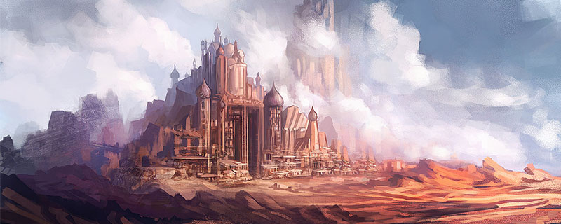
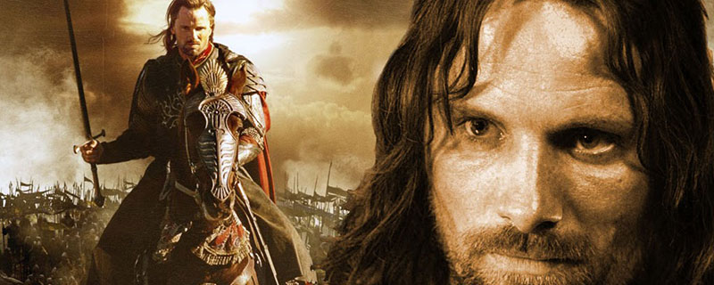

Трилогия «Властелин Колец»
Трилогия «Властелин Колец» бесспорно возглавляет список «культовых» книг XX века. Ее автор, Дж.Р.Р.Толкин, профессор Оксфордского университета, специалист по древнему и средневековому английскому языку, создал удивительный мир - Среднеземье, который вот уже без малого пятьдесят лет неодолимо влечет к себе миллионы читателей. Там, в Среднеземье, в стране, управляемой советом волшебников, где в серебряных лесах поют эльфы, в глубоких пещерах добывают драгоценный мифрил гномы, а бескорыстие добрых чародеев постоянно подвергается испытаниям, - разгорается битва Света и Тьмы, исход которой, по воле провидения, зависит от самых маленьких жителей - Хоббитов. История Кольца Всевластья послужила основой множеству телевизионных и театральных постановок, мультфильмов, компьютерных игр и комиксов. Тысячи людей по всему миру ежегодно собираются для участия в ролевых играх, основанных на сюжетах, взятых у Толкина. Эпопею Толкина, как миф, можно интерпретировать по - разному - и как повествование о бывших или будущих событиях, и как притчу, и как аллегорию, и как историю духовного восхождения, и как фантастику, - все толкования будут верны, но ни одно не станет полным. «Возвращение Короля» – третий том трилогии. Здесь рассказывается о последней битве, о том, как Хранитель выполнил свою миссию и как погибло царство Саурона. Книга Пятая
Глава 1 Минас Тирит"
Пиппин выглянул из-под плаща Гэндальфа. Он никак не мог понять, во сне или наяву свистит в ушах черный ночной ветер, медленно плывет зубчатая тень гор далеко справа, во сне или наяву качается у него над головой звездное небо. Он пытался вспомнить, что с ним и где он, но мысли путались, отдельные картины сменяли друг друга. Помнится, они мчались без остановок, летели все вперед и вперед, и там, впереди, вставал на рассвете золотистый мягкий блеск, и был город, затопленный тишиной, и гулкая пустота большого дворца на холме. Они ворвались под его своды в тот самый момент, когда вверху пронеслась огромная крылатая тень, и ужас выбелил лица людей вокруг. Пиппин вспомнил, как и его сердце сжала ледяная рука. Но рядом был Гэндальф, и ужас ушел, осталась только усталость. Пиппин спал, но сон был тревожным, в нем ходили и разговаривали незнакомые люди, что-то приказывал Гэндальф. И дальше, без перехода, снова бешеная скачка сквозь ночь. С тех пор как он заглянул в Палантир, прошло двое, нет, трое суток. Палантир! Это было ужасно! С этим воспоминанием он проснулся окончательно. Вокруг шумел и бормотал все тот же ветер.
Заметка1 Яркий желтый огонь в темном небе заставил Пиппина съежиться от страха. Зачем Гэндальф везет его в это страшное, там, впереди? Он протер глаза. На востоке всходила луна. Значит, они будут скакать и скакать, мчаться сквозь ночь бесконечно долго.
– Где мы, Гэндальф? – На землях Гондора. Это - Анориен. Пиппин притих, но тут же прижался к магу. – Что там? Смотри! Красный огонь! Как драконий глаз. А вон еще один! Гэндальф только крикнул коню: – Вперед, Сполох, вперед! Спеши, друг! - и, наклонившись к Пиппину, сказал: - Смотри. Это зовут на помощь огни Гондора. Война началась. Вот огонь на Амон Дине, пламя на Эленахе, и дальше огни, Нардол, Эрелас, Мин Риммон, Каленхад и Халифириен у границ Рохана. Вперед, Сполох!
Глава 2 Выбор Арагорна
Когда стих топот копыт Сполоха, уносящего Гэндальфа и Пиппина, Мерри вернулся к Арагорну. Сумку свою он потерял еще в Порт Галене, собирать было нечего - так, кое-какие полезные мелочи с развалин Изенгарда. Леголас и Гимли ожидали только сигнала тронуться в путь. – Нас осталось четверо, - сказал Арагорн. - Мы будем вместе, но пойдем не одни. После этого крылатого ужаса король решил выступать немедля и возвращаться к холмам под прикрытием ночи. – А потом куда? - спросил Леголас.
– Еще не знаю. Правитель отдал приказ войскам собраться в Эдорасе на четвертую ночь после этой. Там, я думаю, его ждут вести о войне, и Всадники Рохана двинутся к Минас Тириту. Но у меня другая дорога. – Я с тобой, - тут же сказал Леголас. – И я тоже, - отозвался Гимли. – Мой путь еще темен для меня, - задумчиво ответил Арагорн. - Кажется, наступает час, к которому я готовился всю жизнь. Нам тоже нужно попасть в Минас Тирит, но каким путем мы придем туда, я еще не решил. – А я? - подал голос Мерри. - До сих пор от меня было немного толку, но я все-таки не какая-нибудь безделушка. Всадникам не до меня, Заметка 2 хотя их Правитель и обещал, что мы поговорим с ним о Шире после возвращения. – Мне видится, что ты должен идти с ним, Мерри, - сказал Арагорн. - И не рассчитывай на весёлую прогулку! Теодену долго еще не сидеть в покое Золотых Палат. Немало надежд иссякнет этой горькой весной! Они отправились затемно. Теоден, с ним двадцать два Всадника, Леголас с Гимли и Арагорн с Мерри. Уже переправившись через Изен, они услышали за спиной топот. Их нагнал Всадник из арьергарда.
Глава 3 Рохан собирает войска

Отныне все дороги вели на восток, навстречу Тьме. В тот самый час, когда Пиппин, стоя пред воротами Города, смотрел на входящие войска, король Рохана во главе большого отряда Всадников спускался с гор. Вечерело. Длинные тени, перегоняя лошадей, бежали впереди по долине. На лесистых склонах было уже темно. После дня пути король ехал медленно. Тропа, огибая огромный скальный уступ, нырнула под своды тихо шепчущих елей. Все ниже и ниже спускался отряд в долину. Блеск водопадов приглушали сумерки. Весь этот день воин спускались вниз вдоль ручья; теперь вместе с ними он устремился в широкую долину, поглотил небольшой приток и, взбивая пену, помчался по камням к Эдорасу. В верховьях долины, словно запирая ее, высился могучий горный пик с вершиной, укрытой вечными снегами. На восточных его склонах густо голубели тени, западные склоны пылали в огне заката. Мерри с изумлением озирался по сторонам. Ему было интересно в незнакомой стране. Это был край без неба; в туманной дымке глаз различал только горы, каменная стена вставала за стеной, меж ними разверзались пропасти, заполненные туманом. От могучих водопадов воздух тихо звенел, шумели деревья, стучали по камням копыта. Раньше Мерри любил слушать о горах, думать о них, но теперь, когда горные хребты вздымались вокруг под самые небеса, он чувствовал себя неуютно, живо ощущая исполинскую тяжесть, гнетущую грудь Среднеземья. Слишком они были большие; глядя на них, хотелось оказаться в маленькой комнатке возле камина. Заметка3
Глава 4 Осада Города

Гэндальф разбудил Пиппина. За окнами по-прежнему было темно, в комнате горели свечи. Духота стояла, как перед грозой.
– Который час? - спросил Пиппин, зевая.
– Начало третьего, - ответил маг. - Одевайся, тебя призывает Правитель. Надеюсь, ты не забыл, что служишь ему?
– А он даст нам позавтракать?
– А он даст нам позавтракать?
– Нет. Завтрак готов, - Гэндальф кивнул на стол, - и до обеда больше ничего не будет. В Городе экономят провизию.
Пиппин угрюмо разглядывал небольшую краюху хлеба, очень маленькую (на его взгляд) порцию масла и чашку молока.
– И зачем ты меня привез сюда? - проворчал он.
– Чтобы помешать тебе делать глупости, - в тон ему ответил маг. - Если тебе здесь не по нраву, то, кроме себя, винить некого.
Пиппин насупился и замолчал.
Заметка 4Когда Гэндальф снова привел его в зал со статуями и колоннами, Денетор сидел на том же самом месте. «Как старый, терпеливый паук, - подумалось Пиппину.
- Он что, так со вчера и сидит тут?»
Правитель предложил Гэндальфу сесть, не обращая внимания на стоящего Пиппина, но потом живо обернулся к хоббиту.
– Ну, добрый мой Перегрин, надеюсь, ты провел вчерашний день с пользой и приятством. Вот только угощение могло показаться тебе скудноватым. Но - война.
- Он слегка развел руками. Пиппин покраснел. Ему показалось, что Правителю известны не только его слова, но и мысли.
– Что же ты намереваешься делать у меня на службе?
- спросил Денетор.
– Я думаю, что повелитель укажет мои обязанности.
– Укажу. Когда узнаю, что ты можешь. А для этого лучше всего оставить тебя при себе. Будешь выполнять мои поручения, беседовать со мной, когда будет время. Петь умеешь?
Глава 5 Поход Теодена

Мерри лежал, завернувшись в одеяло, и тщетно вглядывался в темноту. Ночь была тихой, безветренной, только деревья чуть слышно вздыхали вокруг. Он поднял голову и снова услышал настороживший его звук. Где-то вдали глухо били барабаны. Замолкая в одном месте, удары тут же возникали, в другом. Интересно, слышат ли их часовые?
Невидимые в темноте, расположились на отдых войска рохирримов. Пахло лошадьми. Мерри слышал, как они пофыркивают и мягко переступают копытами по усыпанной хвоей земле. На ночь Теоден остановился в глухом сосновом бору у подножия сигнального холма Эленах, поднимавшегося высоко над вершинами Друаданского Леса. От усталости Мерри не мог заснуть. Шли пятые сутки похода. Мрак, становившийся все плотнее, приводил воинов в уныние. Мерри уже не понимал, зачем так рвался в этот поход, ведь ясный приказ короля позволял ему остаться. Хоббит уже не раз принимался гадать, знает ли король о его самоуправстве. А если знает, то что думает? Наверное, Дернхельм как-то договорился с Эльфхельмом, командиром их «йореда» (так Всадники называли отряды). Во всяком случае, воины старались не замечать лишнего новобранца. С ним никто не заговаривал, а если смотрели, то как на лишнюю переметную суму за спиной Дернхельма. Да и сам молодой Всадник за всю дорогу не проронил ни слова. Заметка 5 Тут поневоле начнешь ощущать себя никому не нужной обузой.
Войска Теодена все ближе подходили к опасным местам. До внешних укреплений Минас Тирита оставалось меньше дня пути. Разведчики, которым удалось вернуться, доложили, что дорога впереди захвачена врагом. В трех милях западнее Амон Дина стоит целая орда, а большой отряд орков идет навстречу. Они уже в трех-четырех лигах от Друаданского Леса.
Вернуться в начало